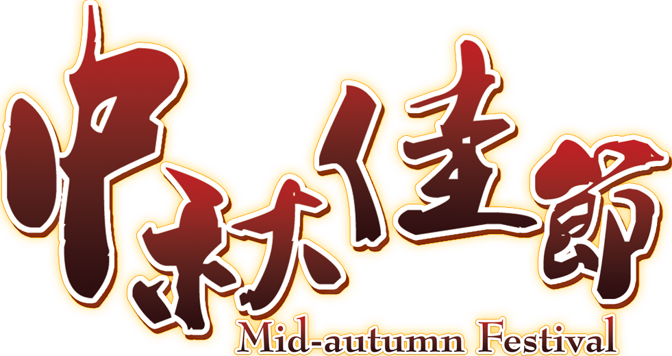

来源：互联网
中国的中秋节 是一个有着 千年历史底蕴的 古老节日。 说到中秋， 人们想到的总是 团圆、月饼、赏月…… 当我们与古人 同赏一轮明月之时， 你想不想了解 古往今来的文人墨客， 是如何通过作品 来表达中秋的意境呢？
《月下独酌》 唐 李白 花间一壶酒，独酌无相亲。 举杯邀明月，对影成三人。 月既不解饮，影徒随我身。 暂伴月将影，行乐须及春。 我歌月徘徊，我舞影零乱。 醒时同交欢，醉后各分散。 永结无情游，相期邈云汉。
《关山月》 唐 李白 明月出天山，苍茫云海间。 长风几万里，吹度玉门关。 汉下白登道，胡窥青海湾。 由来征战地，不见有人还。 戍客望边色，思归多苦颜。 高楼当此夜，叹息未应闲。
《古朗月行》 唐 李白 小时不识月，呼作白玉盘。 又疑瑶台镜，飞在青云端。 仙人垂两足，桂树作团团。 白兔捣药成，问言谁与餐？ 蟾蜍蚀圆影，大明夜已残。 羿昔落九乌，天人清且安。 阴精此沦惑，去去不足观。 忧来其如何？凄怆摧心肝！
《八月十五日夜湓亭望月》 唐 白居易 昔年八月十五夜， 曲江池畔杏园边。 今年八月十五夜， 湓浦沙头水馆前。 西北望乡何处是， 东南见月几回圆。 昨风一吹无人会， 今夜清光似往年。
《中秋月》 唐 白居易 万里清光不可思， 添愁益恨绕天涯， 谁人陇外久征戍， 何处庭前新别离。 失宠故姬归院夜， 没蕃老将上楼时。 照他几许人肠断， 玉兔银蟾远不知。
《中秋》 唐 李朴 皓魄当空宝镜升， 云间仙籁寂无声； 平分秋色一轮满， 长伴云衢千里明； 狡兔空从弦外落， 妖蟆休向眼前生； 灵槎拟约同携手， 更待银河彻底清。
《月》 唐 李商隐 池上与桥边，难忘复可怜， 帘开最明夜，簟卷已凉天。 流处水花急，吐时云叶鲜。 嫦娥无粉黛，只是逞婵娟。
